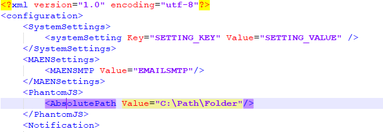

Configure PhantomJS
PhantomJS is used to export Advanced Dashboard indicators, like charts and tables.
- Copy the phantomjs.exe file from the installation package to the webserver
- Update the server.config file to point to the path of phantomjs.exe
